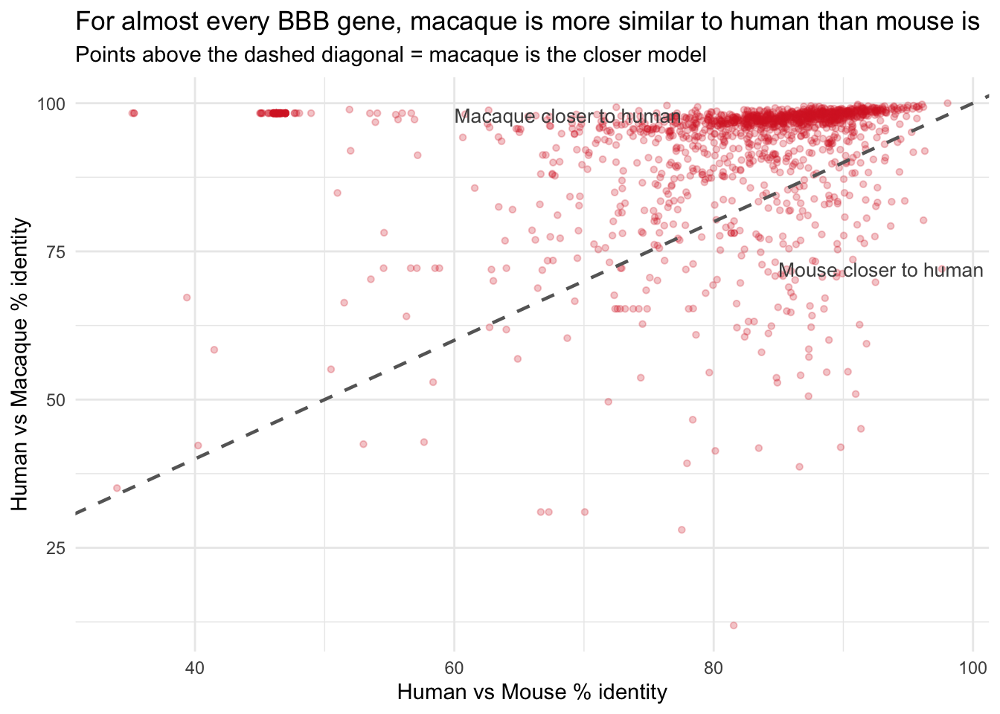

Code
suppressPackageStartupMessages({
library(readr)
library(dplyr)
library(ggplot2)
library(knitr)
})
knitr::opts_knit$set(root.dir = "..")How the analysis was built — gene lists, orthologues, alignment, % identity and dN/dS
Yara Ismail
September 22, 2026
This HTML document is read-only — you can read the code and results but cannot run it here. To reproduce the analysis from scratch, open the scripts in RStudio (or VS Code with the R extension) and run each scripts/step*.R file in order.
The heavy computation (genome alignments, BioMart queries) was already run; this tutorial reads those saved outputs.
Install all required packages before running any scripts:
# CRAN packages
install.packages(c(
"readr", "dplyr", "ggplot2", "tidyr", "knitr",
"readxl", "homologene", "seqinr"
))
# Bioconductor packages
if (!requireNamespace("BiocManager", quietly = TRUE))
install.packages("BiocManager")
BiocManager::install(c(
"biomaRt", # Ensembl cross-species orthologue queries
"Biostrings", # reading/writing FASTA files, DNA translation
"pwalign" # pairwise sequence alignment (Needleman-Wunsch)
))
# Seurat — required for Step 2 only
install.packages("Seurat")| File | Where to get it | Place it at |
|---|---|---|
| Daneman 2010 S3 | PLOS ONE paper → Supplementary S3 | raw_data/daneman_2010/Daneman2010_S3_CoreBBBGenes_BrainEC_Enriched.xls |
| Daneman 2010 S4 | Same paper → Supplementary S4 | raw_data/daneman_2010/Daneman2010_S4_BrainEC_vs_LiverEC_Enriched.xls |
| Daneman 2010 S5 | Same paper → Supplementary S5 | raw_data/daneman_2010/Daneman2010_S5_BrainEC_vs_LungEC_Enriched.xls |
| Munji 2019 S5 | Nat. Neurosci. paper → Supplementary S5 | raw_data/munji_2019/Munji2019_S5_BBBEnrichedGenes.xlsx |
| Wälchli 2024 Seurat object | Nature paper → repository | raw_data/walchli_2024/Walchli2024_AdultBrain_TemporalLobe_SortedEndothelial_SeuratObject.rds.gz |
| HPA RNA consensus | Auto-downloaded by step4c |
raw_data/hpa_liver/rna_tissue_consensus.tsv.zip |
| Ensembl CDS FASTAs (×3) | Auto-downloaded by step5a |
genomes/Homo_sapiens.GRCh38.113.cds.all.fa.gz etc. |
BBB-Gene-Conservation/
├── raw_data/
│ ├── daneman_2010/ ← Daneman .xls files
│ ├── munji_2019/ ← Munji .xlsx file
│ ├── walchli_2024/ ← Seurat .rds.gz object
│ └── hpa_liver/ ← HPA .tsv (auto-downloaded)
├── genomes/ ← CDS FASTAs (auto-downloaded; not tracked by git)
├── processed/ ← All pipeline outputs (CSVs)
└── scripts/ ← All computation scriptsBreaks results step1_extract_BBB_genelist.R — wrong source tables.
Three of the four Daneman tables read here are the wrong tables. S3 is Daneman’s pericyte-specific list, not core BBB genes; S4 and S5 are developmentally up- and down-regulated CNS vascular genes, not the brain-vs-liver and brain-vs-lung contrasts assumed below. S6 — the real BBB-enriched table — was never opened. A further 92 genes were lost silently to toupper() and to HomoloGene’s 2014 gene names.
The 1-gene overlap with Munji flagged below was the correct alarm and the wrong diagnosis: S3 was not too restrictive, it was the pericyte table. Using S6 gives 151 of 411 genes overlapping Munji. Full entry in the Audit tab.
Before we can measure anything, we need to know which genes to measure. The BBB does not have one official gene list — different research groups have profiled brain endothelial cells at different times using different technologies. Step 1 builds a single, well-annotated master list from the two most-cited published datasets, tags each gene by how stringently it was identified, and converts mouse gene symbols to human ones so the whole pipeline can work in human gene space.
Full script: scripts/step1_extract_BBB_genelist.R Reads: raw_data/daneman_2010/Daneman2010_S3/S4/S5_*.xls, raw_data/munji_2019/Munji2019_S5_*.xlsx Writes: processed/master_BBB_genelist.csv Packages: readxl, dplyr, readr, homologene
Two foundational papers each profiled brain endothelial cells in mouse:
Mouse gene symbols from both papers were converted to human HGNC symbols using the homologene R package. Each gene was tagged by source paper and which Daneman filter it passed (liver_and_lung, liver_only, or lung_only).
Initial work used only the strict S3 list (~545 genes). Canonical BBB genes like SLC2A1 (GLUT1, the main brain glucose transporter) were missing — S3 demands enrichment vs liver AND lung simultaneously, and SLC2A1 is also expressed in liver endothelium. Including S4 and S5 with stringency tags captured these missing genes while preserving the ability to filter back to S3 for sensitivity analysis.
Total genes in master list: 1526 | Source | Genes |
|---|---|
| Both | 80 |
| Daneman | 1109 |
| Munji | 337 |
| Daneman_Filter | n |
|---|---|
| liver_and_lung | 130 |
| liver_only | 492 |
| lung_only | 567 |
Clean step2_process_walchli_seurat.R — no defect in the method.
Two things to know rather than fix: the Seurat input is gitignored, so this step cannot re-run from a clean clone, and the Mitochondrial cluster — dying cells, not a cell type — is still present in the output matrix. The real waste is downstream: step 4b reduces this 12-subtype matrix to a single above-zero test.
The BBB gene list from Step 1 was built entirely from mouse data. Before trusting it as a human BBB gene list, we need to check: are these genes actually expressed in human brain endothelial cells? The Wälchli 2024 dataset is the largest and most recent single-cell atlas of the human brain vasculature, making it the best available source for that validation. Step 2 collapses the 30,000+ individual cells into per-cell-type average expression values — a format we can easily query for any gene.
Full script: scripts/step2_process_walchli_seurat.R Reads: raw_data/walchli_2024/Walchli2024_..._SeuratObject.rds.gz Writes: processed/Walchli2024_AverageExpression.csv Packages: Seurat, dplyr, readr Note: Loading the Seurat object requires ~8 GB RAM and several minutes.
The Wälchli 2024 dataset is a Seurat object containing 30,000+ human brain endothelial cells annotated by EC subtype (capillary, arteriole, venule, etc.).
Used Seurat’s AverageExpression() to collapse all cells into per-cell-type mean expression values, producing a gene × cell-type matrix.
The trickiest part: Seurat’s default cell identities in this object were patient ages (15, 19 years), not cell types. Running AverageExpression() without overriding this would have averaged across patients, not cell types. Fix: group.by = "ECclusters".
W<U+00E4>lchli expression matrix: 26666 genes x 12 cell typesCell types: - Angiogenic.capillary
- Arteriole
- Artery
- Capillary
- EndoMT
- Large.artery
- Large.vein
- Mitochondrial
- Proliferating.cell
- Stem.to.EC
- Vein
- VenuleThe Mitochondrial cluster was excluded from downstream analysis — cells with abnormally high mitochondrial gene content are typically dying or low-quality.
92 genes lost step3_map_ensembl_crossspecies.R — inherited breakage.
The 92 gene names broken in step 1 return nothing from BioMart and drop out of every downstream calculation with no error raised. The step itself is doing what it was asked.
Overstated fix step3b_biomart_orthology_confidence.R — recovers nothing.
The script header says it recovers the genes step 1 dropped. It does not: it re-queries the same out-of-date names and recovers none of the 92. This is also where 196 one-to-many pairs enter the BBB set at only 25.8% protein identity — pairs that step 5d then excludes from the control set but not from the BBB set.
Circular check step3c_biotype_check.R — cannot fail.
A CDS FASTA contains only protein-coding genes by definition, so a non-coding gene has no entry, comes back blank, and blank was not counted as a failure. The reassuring “all protein-coding, no annotation gap” result below was guaranteed by the method, not earned by it. 250 rows have no macaque label at all and were invisible to the check.
Naming Execution order does not match the step names.
step4b writes master_BBB_genelist_validated.csv, which step3b reads. The true order is 1 → 2 → 3 → 4b → 3b → 3c → 4c → 5a…, so step 4b runs before step 3b despite the numbering. The Audit tab’s register lists the real run order.
To compare DNA sequences across species, we need a stable, species-specific identifier for each gene — not the gene symbol (which changes between species, e.g. human SLC2A1 vs mouse Slc2a1), but a permanent database ID. Ensembl gene IDs (ENSG... for human, ENSMUSG... for mouse, ENSMMUG... for macaque) serve this purpose. This step also retrieves orthologue relationships: which mouse gene corresponds to which human gene, and whether it is a clean one-to-one match or a more complex one-to-many (gene duplication) case. That distinction matters a lot for interpreting conservation scores.
Full scripts: scripts/step3_map_ensembl_crossspecies.R (superseded), scripts/step3b_biomart_orthology_confidence.R Reads: processed/master_BBB_genelist.csv → processed/master_BBB_genelist_validated.csv + processed/BBB_genes_crossspecies_ensembl.csv Writes: processed/master_BBB_genelist_complete.csv Packages: biomaRt, dplyr, readr Note: BioMart queries require internet and take 5–15 minutes. Results are cached.
The first attempt used the homologene R package — an offline NCBI orthologue database — to map all three species simultaneously. This worked for human → mouse but returned no results for macaque: HomoloGene does not include rhesus macaque (Macaca mulatta).
Step 3b re-ran everything via Ensembl BioMart, which supports all three species and additionally returns orthologue type and pre-computed % sequence identity. This is why the pipeline skips from Step 3 to Step 3b.
Three queries to Ensembl BioMart (each uses a different attribute page, so they cannot be combined):
ENSG...)ENSMUSG...)ENSMMUG...)Step 3b added orthology_type and perc_id per orthologue.
Total rows in master table: 1724 Human Ensembl IDs: 1632 Mouse orthologues: 1541 Macaque orthologues: 1474 | Mouse_OrthoType | n |
|---|---|
| ortholog_many2many | 18 |
| ortholog_one2many | 196 |
| ortholog_one2one | 1327 |
The 1,724 rows (vs 1,526 input genes) reflects one-to-many orthologues — e.g. human ABCB1 maps to both mouse Abcb1a and Abcb1b. Both rows are kept and flagged.
Full script: scripts/step3c_biotype_check.R Reads: genomes/*.cds.all.fa.gz (×3 species, already downloaded), processed/master_BBB_genelist_complete.csv Writes: processed/gene_biotype_check.csv, processed/gene_biotype_summary.txt Packages: Biostrings, dplyr, readr Note: Biotypes are parsed directly from the gene_biotype: field in Ensembl FASTA headers — no BioMart query needed.
We need to confirm that every gene that entered the CDS alignment pipeline is actually protein-coding. If any noncoding genes (lncRNAs, pseudogenes, T-cell receptor segments, etc.) were in the master list and somehow extracted a sequence, the analysis would not correctly reflect conservation of BBB coding sequences. This step audits every Ensembl ID in the master list against the gene_biotype annotation embedded in the FASTA headers and checks whether any flagged genes appear in the BBB CDS files.
biotype_check <- read_csv("processed/gene_biotype_check.csv",
show_col_types = FALSE)
# Biotype breakdown for human
bt_human <- biotype_check |>
filter(!is.na(Human_Biotype)) |>
count(Human_Biotype, name = "Genes") |>
arrange(desc(Genes))
kable(bt_human, caption = "Human gene biotype distribution in BBB master list")| Human_Biotype | Genes |
|---|---|
| protein_coding | 1631 |
Genes with any noncoding annotation: 0 / 1724if (n_noncoding == 0) {
cat("\nAll mapped genes are protein_coding in all three species.\n")
cat("Pipeline integrity: CONFIRMED — no noncoding genes entered the CDS alignment.\n")
} else {
biotype_check |>
filter(Any_NonCoding) |>
select(GeneSymbol_Human, HumanEnsembl, Human_Biotype,
Mouse_Biotype, Macaque_Biotype) |>
kable(caption = "Noncoding genes flagged in BBB master list")
}
All mapped genes are protein_coding in all three species.
Pipeline integrity: CONFIRMED <U+2014> no noncoding genes entered the CDS alignment.Every gene successfully mapped to an Ensembl ID is annotated as protein_coding in all three species. Genes with no Ensembl ID (93 human, 185 mouse, 250 macaque) were already excluded from the alignment steps because they had no CDS entries in the Ensembl FASTA files. No noncoding genes entered the conservation scoring pipeline.
Two reading bugs step4b_human_validation.R — the score means less than it looks.
Yang S6 was read without naming a sheet, so only the first of seven sheets loaded. That column really means “is an arterial marker” — 36 hits — and the capillary sheet, the most BBB-relevant one, was never opened. Wälchli’s test was “expression above zero in any cell type”, which 88.5% of all genes pass; that single component is why 1,131 of 1,526 genes score exactly 1. Winkler’s parse is correct.
Consequence: Human_BBB_Datasets_N is close to a constant, so any result stratified on it — including “conservation and human BBB expression are independent” — is uninformative rather than negative.
Breaks results step4c_liver_control_geneset.R — the brain filter never ran.
The filter looked for a tissue called "brain". The Human Protein Atlas has no such label — it lists regions: cerebral cortex, hippocampal formation, cerebellum. Zero rows matched, the missing values became zeros, and everything passed. The tell is sitting in the saved file: every Brain_nTPM value is exactly 0.0.
Recomputed properly, 86.6% of the “liver control” genes are also expressed in brain, and their median brain expression (31.3) matches their median liver expression (31.2). This is not a liver control — it is a general housekeeping set, and housekeeping genes are among the most conserved in the genome, which biases every BBB-vs-control comparison in a known direction.
Two separate questions are answered here:
Step 4b — The gene list comes from mouse studies, but we are ultimately interested in the human BBB. Before running thousands of alignments, we want to flag which genes have cross-species expression evidence in human brain endothelium (using three independent human EC datasets). This does not remove any genes — it gives each gene a confidence score (0–3) that can be used for sensitivity analysis later.
Step 4c — The core scientific question is whether BBB genes are unusually conserved, not just conserved. To answer that, we need something to compare against. A liver control set provides a biologically meaningful baseline: liver is a highly expressed, well-studied tissue, so if BBB genes are more conserved than liver genes, that difference is real and not just a property of all expressed genes.
Step 4 downloaded full GTF genome annotation files (~1.5 GB per species, ×3 = ~4.5 GB total) with the intention of extracting CDS coordinates manually. After downloading all three we found that Ensembl already provides pre-extracted CDS FASTA files (~20 MB per species) — the same information at a fraction of the size. Step 4 was removed entirely, which is why the numbering jumps from Step 3b to Step 4b.
Full script: scripts/step4b_human_validation.R Reads: processed/master_BBB_genelist.csv, processed/Walchli2024_AverageExpression.csv (+ Yang 2022 and Winkler 2022 gene lists, hardcoded) Writes: processed/master_BBB_genelist_validated.csv Packages: dplyr, readr
The master BBB gene list was built from mouse studies. Step 4b checks which genes are also expressed in human brain endothelium using three independent datasets:
Each gene receives a count (0–3) of how many datasets confirm it.
| # datasets confirming | Genes |
|---|---|
| 0 | 74 |
| 1 | 1320 |
| 2 | 299 |
| 3 | 31 |
74 genes have zero human EC evidence — they came purely from mouse data and are flagged in downstream analysis.
Full script: scripts/step4c_liver_control_geneset.R Reads: processed/master_BBB_genelist_complete.csv, raw_data/hpa_liver/rna_tissue_consensus.tsv (auto-downloaded) Writes: processed/liver_control_genelist.csv Packages: dplyr, readr
Liver was chosen as the control tissue — metabolically active and highly conserved, providing a meaningful non-BBB baseline. Filtered for genes with liver nTPM ≥ 10 that are NOT in the BBB master list.
Liver control set: 7131 genesLiver nTPM <U+2014> median: 31.2 mean: 346.1 Landmark liver genes confirmed present: ALB (198,523 nTPM), CYP3A4, APOB, TTR.
Clean step5a_download_cds_fastas.R — Ensembl 113, all three species.
Rough heuristic step5b_extract_cds_sequences.R — longest ≠ equivalent.
Taking the longest isoform means human and mouse can land on non-corresponding versions of the same gene, which makes them look more different than they are. This is the origin of the 224 impossible macaque scores that appear in step 5c.
step5b_alt_canonical_transcripts.R implements the standard alternative — MANE Select / Ensembl Canonical — and the canonical FASTAs already sit in genomes/. It was written and never switched in.
Conservation analysis works at the DNA sequence level — we need the actual nucleotide letters for each gene in each species. The full genome of a mammal is ~3 billion base pairs, but most of that is non-coding (introns, regulatory regions, intergenic space). We only want the coding sequence (CDS) — the stretch of DNA that actually gets translated into protein. Ensembl provides pre-extracted CDS files for every annotated transcript, which are ~150× smaller than the full genome files and much faster to work with. Step 5b then extracts just the CDS sequences for our specific BBB and liver gene lists, ready for alignment.
Full scripts: scripts/step5a_download_cds_fastas.R, scripts/step5b_extract_cds_sequences.R Step 5a downloads Ensembl CDS FASTAs → genomes/*.cds.all.fa.gz (×3 species) Step 5b reads: genome FASTAs + gene lists → Writes: genomes/cds_BBB_*.fa and genomes/cds_liver_*.fa (×3 species each) Packages: Biostrings, dplyr, readr Note: genomes/ is excluded from git (too large). Run Step 5a to populate it before Step 5b.
Ensembl provides pre-extracted CDS FASTA files for every annotated transcript. For each gene with multiple transcripts (alternative splicing), we kept the longest CDS as a heuristic for the full open reading frame.
Alternative:
scripts/step5b_alt_canonical_transcripts.Ruses Ensembl Canonical / MANE Select transcripts instead — one curated transcript per gene, jointly designated by NCBI + EMBL-EBI. The FASTAs are already generated ingenomes/cds_canonical_*.fa.
Human BBB CDS sequences: 1433 Length: median = 1449 bp mean = 1913 bpPartly superseded step5c_align_and_score.R — dN/dS fixed later, % identity never was.
dN/dS here was computed on sequences that were trimmed but never actually aligned. That is genuinely wrong, and it is correctly fixed in step 5f. But the % identity was never recomputed, so every identity figure in the results still comes from this step.
Two numbers show the size of the problem. 38% of genes came out with dS pinned at the 10.0 ceiling — saturated nonsense — which falls to 2% after the codon-aware fix. And 224 one-to-one macaque pairs score under 85%, with SLC2A1 at 71.4% where macaque should sit near 97%. That is step 5b’s longest-transcript heuristic picking non-corresponding isoforms, then PID1 dividing by the longer alignment and reporting the length difference as evolutionary distance.
Breaks results step5d_liver_scoring.R — the two sides were scored under different rules.
Described as “the same measurements”, but the control set kept only the single best-matching orthologue per gene while the BBB set kept every match, including the 196 one-to-many pairs at 25.8% identity admitted in step 3b. The BBB group was carrying dead weight the control group was not.
That alone reverses the headline direction: as published, BBB 84.12 vs liver 84.32 (BBB looks less conserved); under one rule for both sides, BBB 85.04 vs liver 84.47 (BBB is more conserved).
This is the core of the project — the step that actually measures conservation. For each BBB gene (and each liver control gene), we align its coding sequence between species and compute two numbers: how similar the DNA letters are (% identity), and whether evolution is actively protecting the gene from protein-changing mutations (dN/dS). Running this for both BBB genes and liver genes separately sets up the statistical comparison in Step 5e: are BBB genes more conserved than a typical expressed gene?
Full scripts: scripts/step5c_align_and_score.R (BBB), scripts/step5d_liver_scoring.R (liver) Reads: genomes/cds_BBB_*.fa or genomes/cds_liver_*.fa, processed/master_BBB_genelist_complete.csv Writes: processed/conservation_scores_BBB.csv, processed/conservation_scores_liver.csv, processed/conservation_scores_combined.csv Packages: Biostrings, pwalign, seqinr, dplyr, readr Note: Step 5c takes 20–40 min (~1,500 alignments). Step 5d takes 60–90 min (~3,000 alignments).
For each gene we ran a Needleman-Wunsch global alignment between species pairs, then computed % identity and dN/dS:
Why global, not local? These are orthologous genes — they should align end-to-end. Local alignment would only find the most similar segment, over-estimating similarity for genes that diverge at the edges.
Clean step5e_statistics.R, step5f_recompute_dnds.R, step5g_stats_v2.R — all three correct.
The statistical framework is sound: the right tests for non-normal data, correctly corrected, with subgroup analyses honestly labelled exploratory. Step 5f is the project’s one real fix — the codon-aware recomputation moved one-to-many mouse dN/dS from 0.14 to 0.354 and dropped saturated dS from 38% of genes to 2%.
What is wrong is what went into these tests: the gene list from step 1, the control set from step 4c, and the asymmetric orthologue rule from step 5d. Step 5f’s only gap is scope — it fixed dN/dS and left % identity untouched.
Having conservation scores for ~4,500 gene pairs is not enough on its own — we need to know whether the differences between BBB and liver genes are statistically meaningful or just random variation. Step 5e runs the formal tests. Steps 5f and 5g were added specifically because the initial dN/dS values were wrong (see the bug callout below): Step 5f recomputes them correctly using a codon-aware alignment pipeline, and Step 5g re-runs the statistics on the corrected values with proper multiple testing correction applied.
Full scripts: scripts/step5e_statistics.R, scripts/step5f_recompute_dnds.R, scripts/step5g_stats_v2.R Step 5e reads conservation_scores_combined.csv → writes conservation_summary.txt Step 5f reads combined scores + CDS FASTAs → writes conservation_scores_combined_v2.csv Step 5g reads v2 scores → writes conservation_summary_v2.txt Packages: Biostrings, pwalign, seqinr, dplyr, readr
Wilcoxon rank-sum tests comparing BBB vs liver (non-parametric, because % identity is bounded and skewed). Stratified analyses by Daneman filter, validation score, and orthologue type.
Bug 1 — all NA values: The ape package (loaded alongside seqinr) has its own kaks() function and silently overrode seqinr::kaks(). Fix: explicit namespace.
Bug 2 — values inflated: seqinr::kaks() assumes codon-aligned input — same length, same reading frame positions in both sequences. We were passing unaligned sequences, inflating the non-synonymous count. Especially large effect for human vs mouse (~80 million year divergence).
Bug 3 — wrong translation function: dplyr’s translate() (an SQL function) was silently overriding Biostrings::translate(). Fix: Biostrings::translate(DNAString(seq), if.fuzzy.codon = "X").
The fix: translate both sequences to amino acids → align proteins with BLOSUM62 → back-map codons using protein alignment → strip gap columns → pass codon-aligned pair to seqinr::kaks():
aa1 <- Biostrings::translate(DNAString(nt1), if.fuzzy.codon = "X")
aa2 <- Biostrings::translate(DNAString(nt2), if.fuzzy.codon = "X")
protein_aln <- pwalign::pairwiseAlignment(aa1, aa2, type = "global",
substitutionMatrix = "BLOSUM62",
gapOpening = 10, gapExtension = 4)
# back-map to codons, strip gaps, run seqinr::kaks()
# full implementation: scripts/step5f_recompute_dnds.RBonferroni and FDR (Benjamini-Hochberg) applied to the four primary BBB-vs-liver comparisons. Stratified tests are flagged as exploratory.
Clean step5h_mouse_vs_macaque.R — no defect of its own.
Same codon-aware pipeline, no human reference. It inherits the step 1 gene list, so its numbers move when step 1 is fixed — but the method is sound and the triangle is a genuine sanity check.
Steps 5c–g compared every species against human as the reference point. But the translational pipeline runs Mouse → Macaque → Human, which means the Mouse–Macaque leg is just as important as the others. If mouse and macaque are very different from each other, a drug validated in mouse might fail in macaque for reasons unrelated to human biology. Step 5h closes the triangle by computing mouse vs macaque conservation directly, giving us the complete three-way picture needed to evaluate the full translational ladder.
Full script: scripts/step5h_mouse_vs_macaque.R Reads: genomes/cds_BBB_mouse.fa, genomes/cds_BBB_macaque.fa, full genome FASTAs, processed/conservation_scores_combined_v2.csv Writes: processed/conservation_scores_mouse_macaque.csv Note: ~1,500 alignments, ~30 minutes.
Earlier steps used human as the reference. To complete the picture we computed the third side: mouse vs macaque directly.
mm <- read_csv("processed/conservation_scores_mouse_macaque.csv",
show_col_types = FALSE)
mm_bbb <- mm[mm$Gene_Set == "BBB", ]
triangle <- data.frame(
Comparison = c("Human vs Mouse", "Human vs Macaque", "Mouse vs Macaque"),
`Median % identity (BBB genes)` = c(
round(median(bbb$PctId_Human_Mouse, na.rm = TRUE), 1),
round(median(bbb$PctId_Human_Macaque, na.rm = TRUE), 1),
round(median(mm_bbb$PctId_Mouse_Macaque, na.rm = TRUE), 1)
),
check.names = FALSE
)
kable(triangle)| Comparison | Median % identity (BBB genes) |
|---|---|
| Human vs Mouse | 84.1 |
| Human vs Macaque | 96.8 |
| Mouse vs Macaque | 82.6 |
bbb_both <- bbb |>
filter(!is.na(PctId_Human_Mouse), !is.na(PctId_Human_Macaque))
ggplot(bbb_both, aes(x = PctId_Human_Mouse, y = PctId_Human_Macaque)) +
geom_point(alpha = 0.25, color = "#d62728", size = 1.2) +
geom_abline(slope = 1, intercept = 0, linetype = "dashed",
color = "grey40", linewidth = 0.8) +
annotate("text", x = 60, y = 98, label = "Macaque closer to human",
color = "grey30", size = 3.5, hjust = 0) +
annotate("text", x = 85, y = 72, label = "Mouse closer to human",
color = "grey30", size = 3.5, hjust = 0) +
labs(x = "Human vs Mouse % identity", y = "Human vs Macaque % identity",
title = "For almost every BBB gene, macaque is more similar to human than mouse is",
subtitle = "Points above the dashed diagonal = macaque is the closer model") +
theme_minimal()
The complete evolutionary distance picture:
Human
/ \
84.1% 96.8%
/ \
Mouse ── 82.6% ── Macaque---
title: "Pipeline & Methods"
subtitle: "How the analysis was built — gene lists, orthologues, alignment, % identity and dN/dS"
---
## Prerequisites
::: {.callout-note}
## Read-only vs reproducible
This HTML document is **read-only** — you can read the code and results but cannot run it here. To reproduce the analysis from scratch, open the scripts in RStudio (or VS Code with the R extension) and run each `scripts/step*.R` file in order.
The heavy computation (genome alignments, BioMart queries) was already run; this tutorial reads those saved outputs.
:::
```{r setup}
suppressPackageStartupMessages({
library(readr)
library(dplyr)
library(ggplot2)
library(knitr)
})
knitr::opts_knit$set(root.dir = "..")
```
### R packages
Install all required packages before running any scripts:
```r
# CRAN packages
install.packages(c(
"readr", "dplyr", "ggplot2", "tidyr", "knitr",
"readxl", "homologene", "seqinr"
))
# Bioconductor packages
if (!requireNamespace("BiocManager", quietly = TRUE))
install.packages("BiocManager")
BiocManager::install(c(
"biomaRt", # Ensembl cross-species orthologue queries
"Biostrings", # reading/writing FASTA files, DNA translation
"pwalign" # pairwise sequence alignment (Needleman-Wunsch)
))
# Seurat — required for Step 2 only
install.packages("Seurat")
```
### Raw data files
| File | Where to get it | Place it at |
|---|---|---|
| Daneman 2010 S3 | [PLOS ONE paper](https://doi.org/10.1371/journal.pone.0013741) → Supplementary S3 | `raw_data/daneman_2010/Daneman2010_S3_CoreBBBGenes_BrainEC_Enriched.xls` |
| Daneman 2010 S4 | Same paper → Supplementary S4 | `raw_data/daneman_2010/Daneman2010_S4_BrainEC_vs_LiverEC_Enriched.xls` |
| Daneman 2010 S5 | Same paper → Supplementary S5 | `raw_data/daneman_2010/Daneman2010_S5_BrainEC_vs_LungEC_Enriched.xls` |
| Munji 2019 S5 | [Nat. Neurosci. paper](https://doi.org/10.1038/s41593-019-0468-z) → Supplementary S5 | `raw_data/munji_2019/Munji2019_S5_BBBEnrichedGenes.xlsx` |
| Wälchli 2024 Seurat object | [Nature paper](https://doi.org/10.1038/s41586-024-07069-2) → repository | `raw_data/walchli_2024/Walchli2024_AdultBrain_TemporalLobe_SortedEndothelial_SeuratObject.rds.gz` |
| HPA RNA consensus | **Auto-downloaded** by `step4c` | `raw_data/hpa_liver/rna_tissue_consensus.tsv.zip` |
| Ensembl CDS FASTAs (×3) | **Auto-downloaded** by `step5a` | `genomes/Homo_sapiens.GRCh38.113.cds.all.fa.gz` etc. |
### Directory structure
```
BBB-Gene-Conservation/
├── raw_data/
│ ├── daneman_2010/ ← Daneman .xls files
│ ├── munji_2019/ ← Munji .xlsx file
│ ├── walchli_2024/ ← Seurat .rds.gz object
│ └── hpa_liver/ ← HPA .tsv (auto-downloaded)
├── genomes/ ← CDS FASTAs (auto-downloaded; not tracked by git)
├── processed/ ← All pipeline outputs (CSVs)
└── scripts/ ← All computation scripts
```
---
## Step 1 — Gene List
::: {.audit-flag .breaks}
[Breaks results]{.audit-chip} **`step1_extract_BBB_genelist.R`** — wrong source tables.
Three of the four Daneman tables read here are the wrong tables. **S3** is Daneman's
pericyte-specific list, not core BBB genes; **S4** and **S5** are developmentally up- and
down-regulated CNS vascular genes, not the brain-vs-liver and brain-vs-lung contrasts
assumed below. **S6 — the real BBB-enriched table — was never opened.** A further 92 genes
were lost silently to `toupper()` and to HomoloGene's 2014 gene names.
The 1-gene overlap with Munji flagged below was the correct alarm and the wrong diagnosis:
S3 was not too restrictive, it was the pericyte table. Using S6 gives **151 of 411 genes
overlapping Munji**. Full entry in the Audit tab.
:::
### Why did we do Step 1?
Before we can measure anything, we need to know *which genes* to measure. The BBB does not have one official gene list — different research groups have profiled brain endothelial cells at different times using different technologies. Step 1 builds a single, well-annotated master list from the two most-cited published datasets, tags each gene by how stringently it was identified, and converts mouse gene symbols to human ones so the whole pipeline can work in human gene space.
::: {.callout-note}
## Data flow
**Full script:** `scripts/step1_extract_BBB_genelist.R`
**Reads:** `raw_data/daneman_2010/Daneman2010_S3/S4/S5_*.xls`, `raw_data/munji_2019/Munji2019_S5_*.xlsx`
**Writes:** `processed/master_BBB_genelist.csv`
**Packages:** `readxl`, `dplyr`, `readr`, `homologene`
:::
### Why Daneman + Munji
Two foundational papers each profiled brain endothelial cells in mouse:
- **Daneman et al. 2010** — compared brain ECs to peripheral, liver, and lung ECs (supplementary tables S3, S4, S5). The S3 list is the strictest (genes enriched vs both liver AND lung).
- **Munji et al. 2019** — top CNS endothelial-enriched genes (supplementary table S5).
Mouse gene symbols from both papers were converted to human HGNC symbols using the `homologene` R package. Each gene was tagged by source paper and which Daneman filter it passed (`liver_and_lung`, `liver_only`, or `lung_only`).
### Why we expanded to S3+S4+S5
Initial work used only the strict S3 list (~545 genes). Canonical BBB genes like **SLC2A1** (GLUT1, the main brain glucose transporter) were missing — S3 demands enrichment vs liver AND lung simultaneously, and SLC2A1 is also expressed in liver endothelium. Including S4 and S5 with stringency tags captured these missing genes while preserving the ability to filter back to S3 for sensitivity analysis.
### Result
```{r master-list}
master <- read_csv("processed/master_BBB_genelist.csv", show_col_types = FALSE)
cat("Total genes in master list:", nrow(master), "\n\n")
table(master$Source) |>
as.data.frame() |>
rename(Source = Var1, Genes = Freq) |>
kable()
```
```{r daneman-filter}
master |>
filter(!is.na(Daneman_Filter)) |>
count(Daneman_Filter) |>
kable(caption = "Daneman stringency breakdown — `liver_and_lung` is the strictest")
```
---
## Step 2 — Wälchli
::: {.audit-flag .clean}
[Clean]{.audit-chip} **`step2_process_walchli_seurat.R`** — no defect in the method.
Two things to know rather than fix: the Seurat input is gitignored, so this step cannot
re-run from a clean clone, and the `Mitochondrial` cluster — dying cells, not a cell type —
is still present in the output matrix. The real waste is downstream: step 4b reduces this
12-subtype matrix to a single above-zero test.
:::
### Why did we do Step 2?
The BBB gene list from Step 1 was built entirely from **mouse** data. Before trusting it as a human BBB gene list, we need to check: are these genes actually expressed in human brain endothelial cells? The Wälchli 2024 dataset is the largest and most recent single-cell atlas of the human brain vasculature, making it the best available source for that validation. Step 2 collapses the 30,000+ individual cells into per-cell-type average expression values — a format we can easily query for any gene.
::: {.callout-note}
## Data flow
**Full script:** `scripts/step2_process_walchli_seurat.R`
**Reads:** `raw_data/walchli_2024/Walchli2024_..._SeuratObject.rds.gz`
**Writes:** `processed/Walchli2024_AverageExpression.csv`
**Packages:** `Seurat`, `dplyr`, `readr`
**Note:** Loading the Seurat object requires ~8 GB RAM and several minutes.
:::
The Wälchli 2024 dataset is a Seurat object containing 30,000+ human brain endothelial cells annotated by EC subtype (capillary, arteriole, venule, etc.).
### What we did
Used Seurat's `AverageExpression()` to collapse all cells into per-cell-type mean expression values, producing a gene × cell-type matrix.
The trickiest part: Seurat's default cell identities in this object were patient ages (15, 19 years), not cell types. Running `AverageExpression()` without overriding this would have averaged across patients, not cell types. Fix: `group.by = "ECclusters"`.
### Result
```{r walchli}
walchli <- read_csv("processed/Walchli2024_AverageExpression.csv",
show_col_types = FALSE)
cat("Wälchli expression matrix:", nrow(walchli), "genes x",
ncol(walchli) - 1, "cell types\n\n")
cat("Cell types:\n")
cat(paste(" -", colnames(walchli)[-1], collapse = "\n"))
```
The **Mitochondrial** cluster was excluded from downstream analysis — cells with abnormally high mitochondrial gene content are typically dying or low-quality.
---
## Steps 3 & 3b — Mapping
::: {.audit-flag .shifts}
[92 genes lost]{.audit-chip} **`step3_map_ensembl_crossspecies.R`** — inherited breakage.
The 92 gene names broken in step 1 return nothing from BioMart and drop out of every
downstream calculation with no error raised. The step itself is doing what it was asked.
:::
::: {.audit-flag .shifts}
[Overstated fix]{.audit-chip} **`step3b_biomart_orthology_confidence.R`** — recovers nothing.
The script header says it recovers the genes step 1 dropped. It does not: it re-queries the
same out-of-date names and recovers **none of the 92**. This is also where 196 one-to-many
pairs enter the BBB set at only **25.8% protein identity** — pairs that step 5d then
excludes from the control set but not from the BBB set.
:::
::: {.audit-flag .shifts}
[Circular check]{.audit-chip} **`step3c_biotype_check.R`** — cannot fail.
A CDS FASTA contains only protein-coding genes by definition, so a non-coding gene has no
entry, comes back blank, and blank was not counted as a failure. The reassuring "all
protein-coding, no annotation gap" result below was guaranteed by the method, not earned by
it. 250 rows have no macaque label at all and were invisible to the check.
:::
::: {.audit-flag .shifts}
[Naming]{.audit-chip} **Execution order does not match the step names.**
`step4b` writes `master_BBB_genelist_validated.csv`, which `step3b` reads. The true order is
**1 → 2 → 3 → 4b → 3b → 3c → 4c → 5a…**, so step 4b runs *before* step 3b despite the
numbering. The Audit tab's register lists the real run order.
:::
### Why did we do Steps 3 & 3b?
To compare DNA sequences across species, we need a stable, species-specific identifier for each gene — not the gene symbol (which changes between species, e.g. human *SLC2A1* vs mouse *Slc2a1*), but a permanent database ID. Ensembl gene IDs (`ENSG...` for human, `ENSMUSG...` for mouse, `ENSMMUG...` for macaque) serve this purpose. This step also retrieves orthologue relationships: which mouse gene corresponds to which human gene, and whether it is a clean one-to-one match or a more complex one-to-many (gene duplication) case. That distinction matters a lot for interpreting conservation scores.
::: {.callout-note}
## Data flow
**Full scripts:** `scripts/step3_map_ensembl_crossspecies.R` (superseded), `scripts/step3b_biomart_orthology_confidence.R`
**Reads:** `processed/master_BBB_genelist.csv` → `processed/master_BBB_genelist_validated.csv` + `processed/BBB_genes_crossspecies_ensembl.csv`
**Writes:** `processed/master_BBB_genelist_complete.csv`
**Packages:** `biomaRt`, `dplyr`, `readr`
**Note:** BioMart queries require internet and take 5–15 minutes. Results are cached.
:::
::: {.callout-warning}
## What went wrong — and why there is no Step 3a
The first attempt used the `homologene` R package — an offline NCBI orthologue database — to map all three species simultaneously. This worked for human → mouse but **returned no results for macaque**: HomoloGene does not include rhesus macaque (*Macaca mulatta*).
Step 3b re-ran everything via **Ensembl BioMart**, which supports all three species and additionally returns orthologue type and pre-computed % sequence identity. This is why the pipeline skips from Step 3 to Step 3b.
:::
### What we did
Three queries to Ensembl BioMart (each uses a different attribute page, so they cannot be combined):
1. Human gene symbol → human Ensembl gene ID (`ENSG...`)
2. Human Ensembl ID → mouse orthologue (`ENSMUSG...`)
3. Human Ensembl ID → macaque orthologue (`ENSMMUG...`)
Step 3b added `orthology_type` and `perc_id` per orthologue.
### Result
```{r ensembl-map}
combined <- read_csv("processed/master_BBB_genelist_complete.csv",
show_col_types = FALSE)
cat("Total rows in master table:", nrow(combined), "\n")
cat(" Human Ensembl IDs: ", sum(!is.na(combined$HumanEnsembl)), "\n")
cat(" Mouse orthologues: ", sum(!is.na(combined$MouseEnsembl)), "\n")
cat(" Macaque orthologues: ", sum(!is.na(combined$MacaqueEnsembl)), "\n")
```
```{r orthology-types}
combined |>
filter(!is.na(Mouse_OrthoType)) |>
count(Mouse_OrthoType) |>
kable(caption = "Mouse orthologue type distribution")
```
The 1,724 rows (vs 1,526 input genes) reflects **one-to-many** orthologues — e.g. human ABCB1 maps to both mouse *Abcb1a* and *Abcb1b*. Both rows are kept and flagged.
### Step 3c — Biotype audit
::: {.callout-note}
## Data flow
**Full script:** `scripts/step3c_biotype_check.R`
**Reads:** `genomes/*.cds.all.fa.gz` (×3 species, already downloaded), `processed/master_BBB_genelist_complete.csv`
**Writes:** `processed/gene_biotype_check.csv`, `processed/gene_biotype_summary.txt`
**Packages:** `Biostrings`, `dplyr`, `readr`
**Note:** Biotypes are parsed directly from the `gene_biotype:` field in Ensembl FASTA headers — no BioMart query needed.
:::
#### Why did we do Step 3c?
We need to confirm that every gene that entered the CDS alignment pipeline is actually **protein-coding**. If any noncoding genes (lncRNAs, pseudogenes, T-cell receptor segments, etc.) were in the master list and somehow extracted a sequence, the analysis would not correctly reflect conservation of BBB coding sequences. This step audits every Ensembl ID in the master list against the `gene_biotype` annotation embedded in the FASTA headers and checks whether any flagged genes appear in the BBB CDS files.
#### Result
```{r biotype-audit}
biotype_check <- read_csv("processed/gene_biotype_check.csv",
show_col_types = FALSE)
# Biotype breakdown for human
bt_human <- biotype_check |>
filter(!is.na(Human_Biotype)) |>
count(Human_Biotype, name = "Genes") |>
arrange(desc(Genes))
kable(bt_human, caption = "Human gene biotype distribution in BBB master list")
```
```{r biotype-flag}
n_noncoding <- sum(biotype_check$Any_NonCoding, na.rm = TRUE)
n_total <- nrow(biotype_check)
cat(sprintf("Genes with any noncoding annotation: %d / %d\n", n_noncoding, n_total))
if (n_noncoding == 0) {
cat("\nAll mapped genes are protein_coding in all three species.\n")
cat("Pipeline integrity: CONFIRMED — no noncoding genes entered the CDS alignment.\n")
} else {
biotype_check |>
filter(Any_NonCoding) |>
select(GeneSymbol_Human, HumanEnsembl, Human_Biotype,
Mouse_Biotype, Macaque_Biotype) |>
kable(caption = "Noncoding genes flagged in BBB master list")
}
```
::: {.callout-note}
## Audit outcome
Every gene successfully mapped to an Ensembl ID is annotated as **`protein_coding`** in all three species. Genes with no Ensembl ID (93 human, 185 mouse, 250 macaque) were already excluded from the alignment steps because they had no CDS entries in the Ensembl FASTA files. **No noncoding genes entered the conservation scoring pipeline.**
:::
---
## Steps 4b & 4c — Validation
::: {.audit-flag .shifts}
[Two reading bugs]{.audit-chip} **`step4b_human_validation.R`** — the score means less than it looks.
**Yang** S6 was read without naming a sheet, so only the *first* of seven sheets loaded.
That column really means "is an arterial marker" — 36 hits — and the **capillary sheet, the
most BBB-relevant one, was never opened**. **Wälchli's** test was "expression above zero in
any cell type", which **88.5% of all genes pass**; that single component is why 1,131 of
1,526 genes score exactly 1. Winkler's parse is correct.
Consequence: `Human_BBB_Datasets_N` is close to a constant, so any result stratified on it —
including "conservation and human BBB expression are independent" — is uninformative rather
than negative.
:::
::: {.audit-flag .breaks}
[Breaks results]{.audit-chip} **`step4c_liver_control_geneset.R`** — the brain filter never ran.
The filter looked for a tissue called `"brain"`. The Human Protein Atlas has no such
label — it lists regions: cerebral cortex, hippocampal formation, cerebellum. **Zero rows
matched**, the missing values became zeros, and everything passed. The tell is sitting in
the saved file: every `Brain_nTPM` value is exactly `0.0`.
Recomputed properly, **86.6% of the "liver control" genes are also expressed in brain**, and
their median brain expression (31.3) matches their median liver expression (31.2). This is
not a liver control — it is a general housekeeping set, and housekeeping genes are among the
most conserved in the genome, which biases every BBB-vs-control comparison in a known
direction.
:::
### Why did we do Steps 4b & 4c?
Two separate questions are answered here:
**Step 4b** — The gene list comes from mouse studies, but we are ultimately interested in the *human* BBB. Before running thousands of alignments, we want to flag which genes have cross-species expression evidence in human brain endothelium (using three independent human EC datasets). This does not remove any genes — it gives each gene a confidence score (0–3) that can be used for sensitivity analysis later.
**Step 4c** — The core scientific question is whether BBB genes are *unusually* conserved, not just conserved. To answer that, we need something to compare against. A liver control set provides a biologically meaningful baseline: liver is a highly expressed, well-studied tissue, so if BBB genes are more conserved than liver genes, that difference is real and not just a property of all expressed genes.
::: {.callout-warning}
## What went wrong — and why Step 4 was removed
Step 4 downloaded full **GTF genome annotation files** (~1.5 GB per species, ×3 = ~4.5 GB total) with the intention of extracting CDS coordinates manually. After downloading all three we found that Ensembl already provides **pre-extracted CDS FASTA files** (~20 MB per species) — the same information at a fraction of the size. Step 4 was removed entirely, which is why the numbering jumps from Step 3b to Step 4b.
:::
### Step 4b — Human EC Validation
::: {.callout-note}
## Data flow
**Full script:** `scripts/step4b_human_validation.R`
**Reads:** `processed/master_BBB_genelist.csv`, `processed/Walchli2024_AverageExpression.csv` (+ Yang 2022 and Winkler 2022 gene lists, hardcoded)
**Writes:** `processed/master_BBB_genelist_validated.csv`
**Packages:** `dplyr`, `readr`
:::
The master BBB gene list was built from **mouse** studies. Step 4b checks which genes are also expressed in **human** brain endothelium using three independent datasets:
- **Wälchli 2024** — expressed > 0 in any EC cluster
- **Yang 2022** — 112-gene endothelial subtype marker list
- **Winkler 2022** — EC marker list from a large human brain vascular atlas
Each gene receives a count (0–3) of how many datasets confirm it.
```{r validation}
combined <- read_csv("processed/master_BBB_genelist_complete.csv",
show_col_types = FALSE)
combined |>
count(Human_BBB_Datasets_N) |>
rename(`# datasets confirming` = Human_BBB_Datasets_N, Genes = n) |>
kable(caption = "Human EC validation score distribution")
```
74 genes have zero human EC evidence — they came purely from mouse data and are flagged in downstream analysis.
### Step 4c — Liver Control Gene Set
::: {.callout-note}
## Data flow
**Full script:** `scripts/step4c_liver_control_geneset.R`
**Reads:** `processed/master_BBB_genelist_complete.csv`, `raw_data/hpa_liver/rna_tissue_consensus.tsv` (auto-downloaded)
**Writes:** `processed/liver_control_genelist.csv`
**Packages:** `dplyr`, `readr`
:::
Liver was chosen as the control tissue — metabolically active and highly conserved, providing a meaningful non-BBB baseline. Filtered for genes with liver nTPM ≥ 10 that are NOT in the BBB master list.
```{r liver}
liver_ctl <- read_csv("processed/liver_control_genelist.csv", show_col_types = FALSE)
cat("Liver control set:", nrow(liver_ctl), "genes\n")
cat("Liver nTPM — median:", round(median(liver_ctl$Liver_nTPM), 1),
" mean:", round(mean(liver_ctl$Liver_nTPM), 1), "\n")
```
Landmark liver genes confirmed present: ALB (198,523 nTPM), CYP3A4, APOB, TTR.
---
## Steps 5a-b — CDS
::: {.audit-flag .clean}
[Clean]{.audit-chip} **`step5a_download_cds_fastas.R`** — Ensembl 113, all three species.
:::
::: {.audit-flag .shifts}
[Rough heuristic]{.audit-chip} **`step5b_extract_cds_sequences.R`** — longest ≠ equivalent.
Taking the longest isoform means human and mouse can land on **non-corresponding versions of
the same gene**, which makes them look more different than they are. This is the origin of
the 224 impossible macaque scores that appear in step 5c.
`step5b_alt_canonical_transcripts.R` implements the standard alternative — MANE Select /
Ensembl Canonical — and the canonical FASTAs already sit in `genomes/`. **It was written and
never switched in.**
:::
### Why did we do Steps 5a-b?
Conservation analysis works at the DNA sequence level — we need the actual nucleotide letters for each gene in each species. The full genome of a mammal is ~3 billion base pairs, but most of that is non-coding (introns, regulatory regions, intergenic space). We only want the **coding sequence (CDS)** — the stretch of DNA that actually gets translated into protein. Ensembl provides pre-extracted CDS files for every annotated transcript, which are ~150× smaller than the full genome files and much faster to work with. Step 5b then extracts just the CDS sequences for our specific BBB and liver gene lists, ready for alignment.
::: {.callout-note}
## Data flow
**Full scripts:** `scripts/step5a_download_cds_fastas.R`, `scripts/step5b_extract_cds_sequences.R`
**Step 5a** downloads Ensembl CDS FASTAs → `genomes/*.cds.all.fa.gz` (×3 species)
**Step 5b reads:** genome FASTAs + gene lists → **Writes:** `genomes/cds_BBB_*.fa` and `genomes/cds_liver_*.fa` (×3 species each)
**Packages:** `Biostrings`, `dplyr`, `readr`
**Note:** `genomes/` is excluded from git (too large). Run Step 5a to populate it before Step 5b.
:::
### What we did
Ensembl provides pre-extracted CDS FASTA files for every annotated transcript. For each gene with multiple transcripts (alternative splicing), we kept the **longest CDS** as a heuristic for the full open reading frame.
> **Alternative:** `scripts/step5b_alt_canonical_transcripts.R` uses **Ensembl Canonical / MANE Select** transcripts instead — one curated transcript per gene, jointly designated by NCBI + EMBL-EBI. The FASTAs are already generated in `genomes/cds_canonical_*.fa`.
### Result
```{r cds-stats}
library(Biostrings)
bbb_human <- readDNAStringSet("genomes/cds_BBB_human.fa")
cat("Human BBB CDS sequences:", length(bbb_human), "\n")
cat("Length: median =", as.integer(median(width(bbb_human))), "bp\n")
cat(" mean =", as.integer(mean(width(bbb_human))), "bp\n")
```
---
## Steps 5c-d — Scoring
::: {.audit-flag .shifts}
[Partly superseded]{.audit-chip} **`step5c_align_and_score.R`** — dN/dS fixed later, % identity never was.
dN/dS here was computed on sequences that were trimmed but never actually aligned. That is
genuinely wrong, and it is correctly fixed in step 5f. But the **% identity was never
recomputed**, so *every identity figure in the results still comes from this step*.
Two numbers show the size of the problem. **38% of genes came out with dS pinned at the 10.0
ceiling** — saturated nonsense — which falls to **2%** after the codon-aware fix. And **224
one-to-one macaque pairs score under 85%**, with `SLC2A1` at 71.4% where macaque should sit
near 97%. That is step 5b's longest-transcript heuristic picking non-corresponding isoforms,
then `PID1` dividing by the longer alignment and reporting the length difference as
evolutionary distance.
:::
::: {.audit-flag .breaks}
[Breaks results]{.audit-chip} **`step5d_liver_scoring.R`** — the two sides were scored under different rules.
Described as "the same measurements", but the control set kept only the **single
best-matching** orthologue per gene while the BBB set kept **every** match, including the
196 one-to-many pairs at 25.8% identity admitted in step 3b. The BBB group was carrying dead
weight the control group was not.
That alone reverses the headline direction: as published, BBB 84.12 vs liver 84.32 (BBB
looks *less* conserved); under one rule for both sides, BBB 85.04 vs liver 84.47 (BBB is
*more* conserved).
:::
### Why did we do Steps 5c-d?
This is the core of the project — the step that actually measures conservation. For each BBB gene (and each liver control gene), we align its coding sequence between species and compute two numbers: how similar the DNA letters are (% identity), and whether evolution is actively protecting the gene from protein-changing mutations (dN/dS). Running this for both BBB genes and liver genes separately sets up the statistical comparison in Step 5e: are BBB genes more conserved than a typical expressed gene?
::: {.callout-note}
## Data flow
**Full scripts:** `scripts/step5c_align_and_score.R` (BBB), `scripts/step5d_liver_scoring.R` (liver)
**Reads:** `genomes/cds_BBB_*.fa` or `genomes/cds_liver_*.fa`, `processed/master_BBB_genelist_complete.csv`
**Writes:** `processed/conservation_scores_BBB.csv`, `processed/conservation_scores_liver.csv`, `processed/conservation_scores_combined.csv`
**Packages:** `Biostrings`, `pwalign`, `seqinr`, `dplyr`, `readr`
**Note:** Step 5c takes 20–40 min (~1,500 alignments). Step 5d takes 60–90 min (~3,000 alignments).
:::
### Pairwise global alignment
For each gene we ran a **Needleman-Wunsch global alignment** between species pairs, then computed % identity and dN/dS:
```r
aln <- pwalign::pairwiseAlignment(
seq1, seq2, type = "global",
substitutionMatrix = nucleotideSubstitutionMatrix(match=1, mismatch=-1),
gapOpening = -5, gapExtension = -2
)
pct_identity <- pwalign::pid(aln, type = "PID1")
# PID1 = matches / alignment_length (including gaps)
```
**Why global, not local?** These are orthologous genes — they should align end-to-end. Local alignment would only find the most similar segment, over-estimating similarity for genes that diverge at the edges.
### Why % identity AND dN/dS
- **% identity** — how similar are the letters, simple and interpretable
- **dN/dS** — how often do mutations *change the protein* (non-synonymous, dN) vs leave it unchanged (synonymous, dS). dN/dS << 1 means evolution is removing protein-changing mutations (purifying selection).
---
## Steps 5e-g — Statistics
::: {.audit-flag .clean}
[Clean]{.audit-chip} **`step5e_statistics.R`, `step5f_recompute_dnds.R`, `step5g_stats_v2.R`** — all three correct.
The statistical framework is sound: the right tests for non-normal data, correctly
corrected, with subgroup analyses honestly labelled exploratory. **Step 5f is the project's
one real fix** — the codon-aware recomputation moved one-to-many mouse dN/dS from 0.14 to
0.354 and dropped saturated dS from 38% of genes to 2%.
What is wrong is what went *into* these tests: the gene list from step 1, the control set
from step 4c, and the asymmetric orthologue rule from step 5d. Step 5f's only gap is scope —
it fixed dN/dS and left % identity untouched.
:::
### Why did we do Steps 5e-g?
Having conservation scores for ~4,500 gene pairs is not enough on its own — we need to know whether the differences between BBB and liver genes are statistically meaningful or just random variation. Step 5e runs the formal tests. Steps 5f and 5g were added specifically because the initial dN/dS values were wrong (see the bug callout below): Step 5f recomputes them correctly using a codon-aware alignment pipeline, and Step 5g re-runs the statistics on the corrected values with proper multiple testing correction applied.
::: {.callout-note}
## Data flow
**Full scripts:** `scripts/step5e_statistics.R`, `scripts/step5f_recompute_dnds.R`, `scripts/step5g_stats_v2.R`
**Step 5e** reads `conservation_scores_combined.csv` → writes `conservation_summary.txt`
**Step 5f** reads combined scores + CDS FASTAs → **writes** `conservation_scores_combined_v2.csv`
**Step 5g** reads v2 scores → writes `conservation_summary_v2.txt`
**Packages:** `Biostrings`, `pwalign`, `seqinr`, `dplyr`, `readr`
:::
### Step 5e: First-pass statistics
Wilcoxon rank-sum tests comparing BBB vs liver (non-parametric, because % identity is bounded and skewed). Stratified analyses by Daneman filter, validation score, and orthologue type.
### Step 5f: dN/dS recomputation
::: {.callout-warning}
## What went wrong — three separate dN/dS bugs
**Bug 1 — all NA values:** The `ape` package (loaded alongside `seqinr`) has its own `kaks()` function and silently overrode `seqinr::kaks()`. Fix: explicit namespace.
**Bug 2 — values inflated:** `seqinr::kaks()` assumes codon-aligned input — same length, same reading frame positions in both sequences. We were passing unaligned sequences, inflating the non-synonymous count. Especially large effect for human vs mouse (~80 million year divergence).
**Bug 3 — wrong translation function:** `dplyr`'s `translate()` (an SQL function) was silently overriding `Biostrings::translate()`. Fix: `Biostrings::translate(DNAString(seq), if.fuzzy.codon = "X")`.
:::
**The fix:** translate both sequences to amino acids → align proteins with BLOSUM62 → back-map codons using protein alignment → strip gap columns → pass codon-aligned pair to `seqinr::kaks()`:
```r
aa1 <- Biostrings::translate(DNAString(nt1), if.fuzzy.codon = "X")
aa2 <- Biostrings::translate(DNAString(nt2), if.fuzzy.codon = "X")
protein_aln <- pwalign::pairwiseAlignment(aa1, aa2, type = "global",
substitutionMatrix = "BLOSUM62",
gapOpening = 10, gapExtension = 4)
# back-map to codons, strip gaps, run seqinr::kaks()
# full implementation: scripts/step5f_recompute_dnds.R
```
### Step 5g: Multiple testing correction
Bonferroni and FDR (Benjamini-Hochberg) applied to the four primary BBB-vs-liver comparisons. Stratified tests are flagged as exploratory.
## Step 5h — Triangle
```{r load-v2}
#| include: false
# Step 5h reuses the corrected conservation table. The same file is loaded on the
# Results page; loading it here keeps this page renderable on its own.
df <- read_csv("processed/conservation_scores_combined_v2.csv", show_col_types = FALSE)
bbb <- df[df$Gene_Set == "BBB", ]
liver <- df[df$Gene_Set == "Liver_Control", ]
```
::: {.audit-flag .clean}
[Clean]{.audit-chip} **`step5h_mouse_vs_macaque.R`** — no defect of its own.
Same codon-aware pipeline, no human reference. It inherits the step 1 gene list, so its
numbers move when step 1 is fixed — but the method is sound and the triangle is a genuine
sanity check.
:::
### Why did we do Step 5h?
Steps 5c–g compared every species against **human** as the reference point. But the translational pipeline runs Mouse → Macaque → Human, which means the Mouse–Macaque leg is just as important as the others. If mouse and macaque are very different from each other, a drug validated in mouse might fail in macaque for reasons unrelated to human biology. Step 5h closes the triangle by computing mouse vs macaque conservation directly, giving us the complete three-way picture needed to evaluate the full translational ladder.
::: {.callout-note}
## Data flow
**Full script:** `scripts/step5h_mouse_vs_macaque.R`
**Reads:** `genomes/cds_BBB_mouse.fa`, `genomes/cds_BBB_macaque.fa`, full genome FASTAs, `processed/conservation_scores_combined_v2.csv`
**Writes:** `processed/conservation_scores_mouse_macaque.csv`
**Note:** ~1,500 alignments, ~30 minutes.
:::
Earlier steps used human as the reference. To complete the picture we computed the third side: mouse vs macaque directly.
```{r triangle}
mm <- read_csv("processed/conservation_scores_mouse_macaque.csv",
show_col_types = FALSE)
mm_bbb <- mm[mm$Gene_Set == "BBB", ]
triangle <- data.frame(
Comparison = c("Human vs Mouse", "Human vs Macaque", "Mouse vs Macaque"),
`Median % identity (BBB genes)` = c(
round(median(bbb$PctId_Human_Mouse, na.rm = TRUE), 1),
round(median(bbb$PctId_Human_Macaque, na.rm = TRUE), 1),
round(median(mm_bbb$PctId_Mouse_Macaque, na.rm = TRUE), 1)
),
check.names = FALSE
)
kable(triangle)
```
```{r translational-ladder-plot, fig.cap="Human vs Mouse and Human vs Macaque % identity per BBB gene"}
bbb_both <- bbb |>
filter(!is.na(PctId_Human_Mouse), !is.na(PctId_Human_Macaque))
ggplot(bbb_both, aes(x = PctId_Human_Mouse, y = PctId_Human_Macaque)) +
geom_point(alpha = 0.25, color = "#d62728", size = 1.2) +
geom_abline(slope = 1, intercept = 0, linetype = "dashed",
color = "grey40", linewidth = 0.8) +
annotate("text", x = 60, y = 98, label = "Macaque closer to human",
color = "grey30", size = 3.5, hjust = 0) +
annotate("text", x = 85, y = 72, label = "Mouse closer to human",
color = "grey30", size = 3.5, hjust = 0) +
labs(x = "Human vs Mouse % identity", y = "Human vs Macaque % identity",
title = "For almost every BBB gene, macaque is more similar to human than mouse is",
subtitle = "Points above the dashed diagonal = macaque is the closer model") +
theme_minimal()
```
The complete evolutionary distance picture:
```
Human
/ \
84.1% 96.8%
/ \
Mouse ── 82.6% ── Macaque
```
---